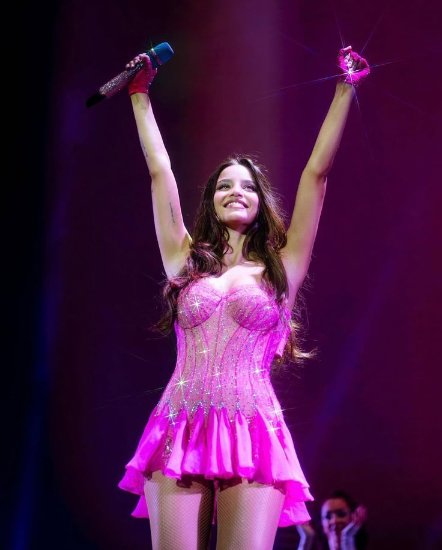
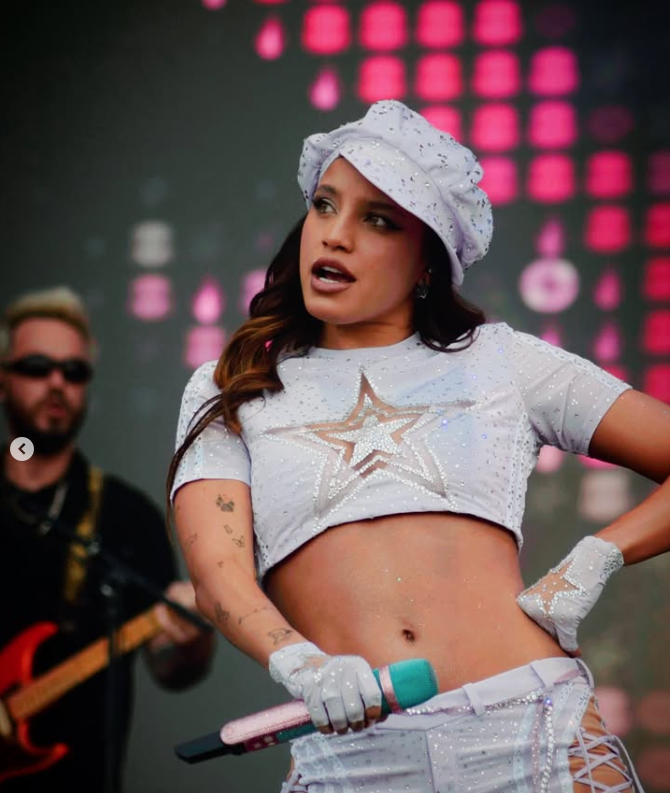

Presentación de Personaje

Emilia Mernes
María Emilia Mernes Rueda, nació el 29 de octubre de 1996 en Nogoyá, Entre Ríos, Argentina. Creció en una familia unida; a los 12 años su abuelo le regaló una guitarra, lo que impulsó su pasión por la música. Comenzó Literatura en la Universidad de Rosario, pero pronto abandonó para dedicarse a la música y subir sus primeros covers a Instagram.
Debutó en el mundo musical como vocalista principal de la banda uruguaya Rombai entre 2016 y 2018. Aprovechó su paso por Rombai no solo para cantar, sino tambien para modelar en 47 Street, Coca-Cola, Ripley.
Carrera como Solista
Álbumes
Giras y Shows
Reconocimientos
¿Tú crees en mí? (mayo 2022) Debut con certificado platino por la CAPIF; contenía varios top 10 en Argentina Hot 100.
Tour: “Tú crees en mí? Tour” (2022), “.MP3 Tour” (2024), y Emilia Tour 2025, con fechas en Sudamérica, Norteamérica (Miami, LA, Nueva York) y Europa.
Premios 2 Gardel, un Odeón, MTV MIAW, premios Quiero, Los 40 Music Awards; múltiples nominaciones (Latin Grammy, Heat, Juventud).
.MP3 (2023) – Inspirado en el sonido de los 2000s; logró el #2 en Argentina y lanzó su primer #1 “La Original” con Tini.
Vendió 10 Movistar Arena en 10 horas y fue la primera artista argentina en agotar 4 fechas en el Estadio Vélez Blacksersfield y es la artista más escuchada en spotify Argentina con 18 millones de oyentes mensuales.
Tiene un show en Bogotá este 17 de Agosto. Preparación física intensa rutina de fuerza, cardio y core, mostrada en TikTok con lema “las perras exclusives lo damos todo.”
Fotos de sus últimos Shows


.jpg)
Su Música


.jpg)